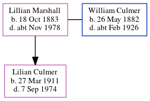

Lillian Annie A Culmer (née Marshall) 1883 - c1978
[ Home ] | [ Calendar ] | [ Surnames Index ] | [ Census Index ] | [ Family History ]An office cleaner, Lillian Marshall, the wife of William James Culmer (the first cousin twice-removed on the mother's side of Nigel Horne), was born in Poplar, London, England on Oct 18, 18831,2,3 and married William (a dock gateman with whom she had 1 child, Lilian) in Sculcoates, East Yorkshire, England around Feb 19054.
During her life, she was living at 4 Eastbourne Street in Sculcoates on Apr 2, 19115; and at 5 Kingston Terrace, Tomlinson Street, Kingston-Upon-Hull, East Yorkshire on Sep 29, 19392.
She died c. Nov 1978 in Kingston-Upon-Hull, East Yorkshire, England3.
Children
- Lilian was born on Mar 27, 1911
Citations
- 1911 England Census Online publication - Provo, UT, USA: Ancestry.com Operations, Inc., 2011.Original data - Census Returns of England and Wales, 1911. Kew, Surrey, England: The National Archives of the UK (TNA), 1911. Data imaged from the National Archives, London, England.
- 1939 Register - Findmypast (was recorded at this address)
- England & Wales deaths 1837-2007 - Findmypast
- England & Wales marriages 1837-2008 - Findmypast
- 1911 Census for England & Wales - Findmypast (was age 28 and the wife of the head of the household)
Media
1911 England, Wales & Scotland Census Transcription - GBC-1911-RG14-28629-0305-3
England & Wales marriages 1837-2008 - BMD/M/1905/1/AZ/000059/198
England & Wales marriages 1837-2008 - BMD/M/1905/1/AZ/000169/206
England & Wales deaths 1837-2007 - BMD/D/1978/4/AZ/000239/006
1939 Register Transcription - TNA-R39-3125-3125E-013-14
England & Wales births 1837-2006 - BMD/B/1883/4/AZ/000359/341
Family Tree
Generated by ged2site. Last updated on Jun 11, 2024